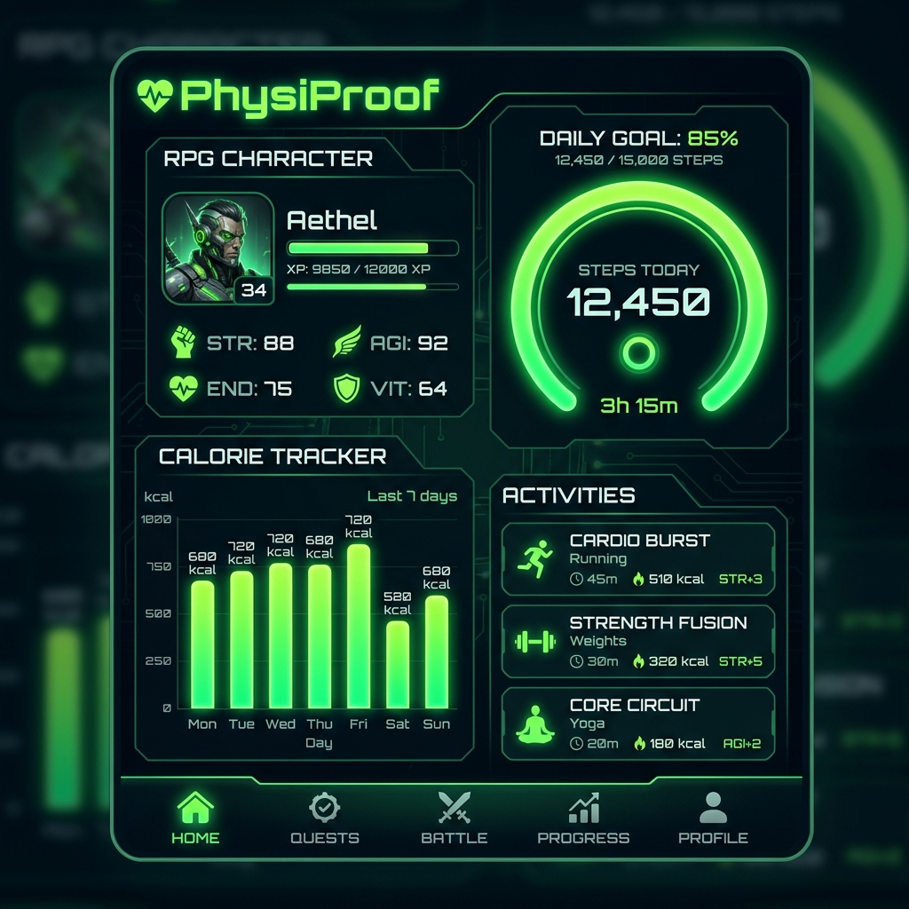
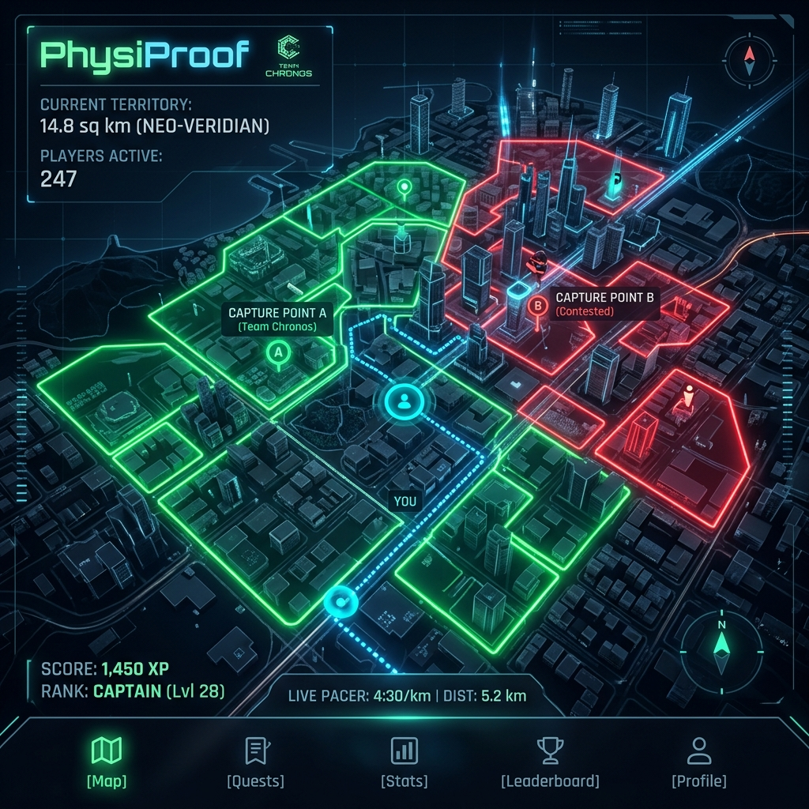

Next Gen Fitness Platform
PhysiProof
運動強度証明 × 位置情報地政学ゲーム × AI身体推論
PhysiProof（フィジプルーフ）
は、身体活動の客観的証明と地政学的ゲーム性を融合させた次世代のウェルネスプラットフォームです。
従来のフィットネスアプリが抱えていた自己申告データのチート・改ざん問題に対し、物理的センサーによる証明、
ハードウェアレベルの真正性保証、そして完全型安全アーキテクチャによる堅牢な解決策を提示します。
🛡️
客観的運動証明 (Anti-Cheat)
端末投げチートを排除する線形加速度検証、GPS移動ベクトルと物理歩数の相関検証による乗り物移動検知など、物理法則に裏打ちされた真の運動証明。
🗺️
地政学的ゲーム性 (Territory War)
運動実績に基づいてリアル世界の領土を獲得・拡張・防衛。Turf.jsを用いた精密な幾何計算による、フィットネスと陣取りゲームの融合体験。
🧠
AI予測 & 物理モデル
Gemini 1.5 Flashによる食事・運動実績からの身体遷移予測。API制限時はハリス・ベネディクトの物理モデルへ自動フォールバックし、可用性を担保。
Applications Screens

ステータス & 食事・運動ダッシュボード

領土獲得・地政学的リアルタイムマップ
⚙️
テクニカルアーキテクチャ
フロントエンド
Vite + React 18 (PWA対応)
バックエンド
Hono on Cloudflare Workers
型安全・バリデーション
Zod (Shared Monorepo SSOT)
データベース
Cloudflare D1 (Edge SQLite)
バックグラウンド維持
Web Audio Keep-Alive + Wake Lock
GIS空間演算
@turf/area, @turf/difference
🔒
高度なチート・改ざん防止対策
物理データ・リプレイ対策
自由落下を上回る投擲ノルム検知 & 重複送信を排除するNonce管理
Google Play Integrity API
改ざんされたOSやエミュレータなどの不正環境からのアクセスを物理層で拒否